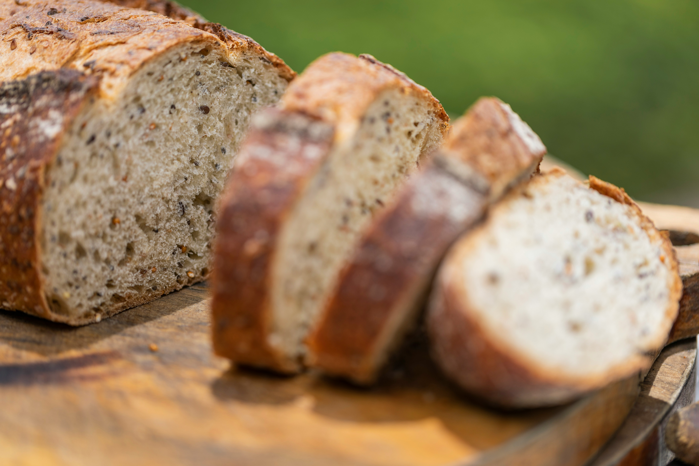
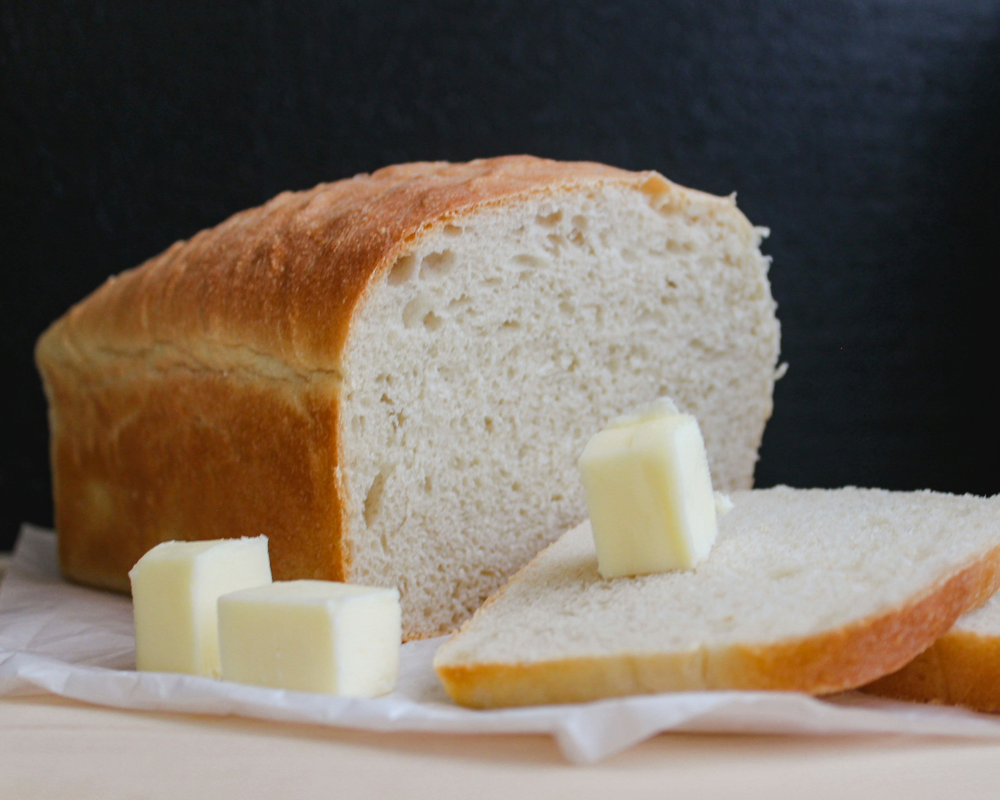

Our Bakery
Beukers Bakery is an exciting new bakery that launched early in 2026.
The head baker, Jen, is a self-taught baker who loves to experiment with lots
of different grains and techniques. The bakery's top selling loaf is a whole
wheat loaf with a proprietary blend of wheat varieties that combine to make
a buttery soft loaf of bread.
Our white bread is created with an organic Artisan Baker's Craft flour to make a
beautiful loaf that is delicate, but tough enough for sandwich making. This loaf
is versitile, sturdy, and delicious.
All breads are baked fresh to order daily. Visit our products page and find the right
bread for your family today!
Top Sellers

